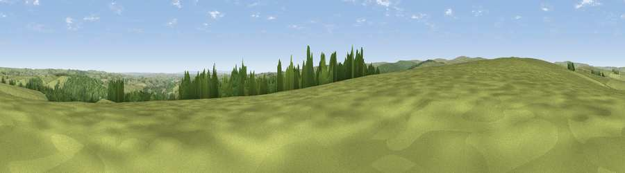

Viewpoint near Hamsterley
#13281 in England · top 30% of its area beats it · near HamsterleyWhere it is
The exact computed spot (NZ 07825 32275). Click the marker for map links.
The view, rendered

A 360° render of this exact spot computed from the terrain model, tree cover and land cover — summer colours, afternoon light, calibrated against photographs of famous viewpoints. Real trees, hedges and buildings will differ in detail.
The panorama
Grey silhouette: terrain skyline in each direction (720 bearings, Earth curvature and refraction included). Dashed green: skyline with trees (+15 m) and buildings (+8 m) as obstacles. Blue strip: how far the ground is visible on each bearing.
Where the view opens
Wedge length = distance to the farthest visible ground on that bearing (vegetation-aware). Rings at 10, 25 and 50 km.
What fills the view
74% grassland · 21% woodland · 4% cropland ·
Angular shares of the visible panorama (visual magnitude), not map area. Landscape diversity 0.31 (0–1 Shannon).
Key numbers
More beautiful places nearby
The staircase of upgrades: each row has a higher view potential than everything closer. Driving times are estimates from straight-line distance, calibrated against real road routing — check an actual route before setting out.
| Place | Direction | Drive | Score |
|---|---|---|---|
| Viewpoint near Wolsingham | WNW · 2 km | ~6 min | 63.0 |
| Viewpoint near Frosterley | WNW · 5 km | ~11 min | 63.5 |
| Five Pikes | W · 7 km | ~14 min | 66.9 |
| Islington Hill | WSW · 8 km | ~16 min | 67.7 |
| Viewpoint near Frosterley | W · 8 km | ~16 min | 70.6 |
| Viewpoint near Eggleston | SW · 10 km | ~20 min | 76.0 |
| Pontop Pike | NNE · 22 km | ~36 min | 77.8 |
| Little Dun Fell | W · 37 km | ~56 min | 78.4 |
54.68547, -1.88014 · source: screening · position refined by local search. Computed location — check access rights before visiting.